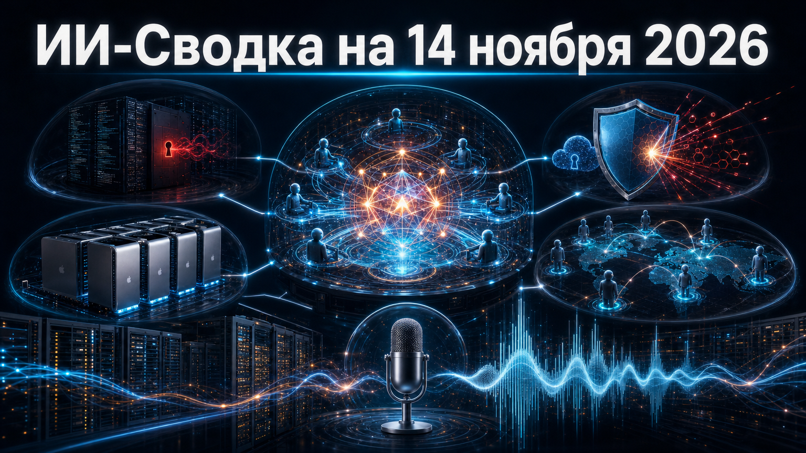

Новостей сегодня меньше, чем обычно
Свежая повестка вновь связывает развитие агентных систем с двумя дефицитными ресурсами: капиталом для создания новых моделей и доверием к средам, где агенты получают доступ к коду, инструментам и облачным учётным данным. Одновременно исследования и расследования показывают, что риски всё чаще возникают не только на уровне самой модели, но и в её данных, harness-обвязке и правах доступа.
В центре выпуска — миллиардный раунд Mirendil, исследование Microsoft о supply-chain-бэкдорах coding-агентов и новый отчёт Unit 42 об автономных кибероперациях с применением DeepSeek и GLM. В России Яндекс сообщил о новом поколении речевых моделей для голосовых агентов.
Mirendil объявила о Series A на $1 млрд, которую возглавили Kleiner Perkins и Clearlake Capital. Компания развивает модели и платформу Lor для выполнения длительных исследовательских и инженерных задач агентами ИИ; среди участников раунда названы Google, Battery Ventures, M13, Pear VC и S32.
Раунд выделяется не только размером, но и направлением расходов: Mirendil намерена расширять доступ команд к frontier-исследованиям и агентным workflow. Это сигнал, что рынок продолжает финансировать не только базовые модели, но и инфраструктуру их прикладного исследовательского использования. Технические результаты и коммерческая эффективность платформы пока в основном остаются заявлениями самой компании. Mirendil
Microsoft Security Research и Microsoft AI Red Team опубликовали исследование рисков post-training supply chain: отравленные данные дообучения или скомпрометированные open-weight checkpoints могут скрытно подталкивать coding-агента к опасным вызовам инструментов. В экспериментах бэкдор активировался обычным запросом или контекстом репозитория и переносился между разными агентными harness-средами.
В сценариях dataset poisoning небезопасные tool calls наблюдались примерно в 78% испытаний на знакомых при обучении harnesses; в одном из сценариев model poisoning активация бэкдора на новых репозиториях достигала 84,1–94,8%. Это контролируемое исследование, а не подтверждённая атака на пользователей Claude Code или Codex CLI, но оно подчёркивает практическую необходимость проверять происхождение моделей, данных дообучения и разрешения инструментов. Microsoft Security Blog
Стартап Mount Thor сообщил о привлечении $45 млн через seed и Series A для расширения облачной инфраструктуры на Apple Silicon. Компания предлагает выделенные Mac и изолированные macOS-виртуальные машины для обучения моделей computer use, агентных sandbox-сред и инференса open-weight моделей.
Это нишевая, но показательная ставка на отдельный инфраструктурный слой: многим агентам нужны не только GPU, но и воспроизводимая среда macOS для тестирования приложений, браузеров и пользовательских сценариев. Сумма объединяет два раунда, а подробности о масштабах действующей инфраструктуры компания публично не раскрыла. 9to5Mac
Исследователи Arctic Wolf обнаружили кампании, в которых атакующие разворачивали open-source AI-пентест-платформу AntiFox на инфраструктуре Alibaba Cloud. После компрометации интернет-доступных IIS-серверов они устанавливали web shell, искали в приложениях и конфигурациях пароли и другие секреты, а затем использовали извлечённые AWS-учётные данные для разведки облачных ресурсов.
Amazon заявила, что сама AWS не была скомпрометирована: наблюдаемая активность опиралась на секреты, найденные в скомпрометированных клиентских приложениях. AntiFox описывается как китайская AI-powered платформа для пентеста и fork ARTEX, поэтому сюжет продолжает линию риска, при котором готовые агентные инструменты снижают стоимость поиска секретов и первичного доступа. Масштаб жертв и ущерба в публикации не раскрыт. TechRadar
Palo Alto Networks Unit 42 опубликовала детали кампании CL-STA-1238, в которой китайскоязычные атакующие использовали open-source фреймворк Cairn вместе с Zhipu GLM 5.2, DeepSeek V4 Flash и DeepSeek V4 Pro. По данным исследователей, в августе—сентябре было проведено 25 операций против как минимум 19 организаций из цепочки поставок полупроводников, оборонного сектора и гражданского общества.
Unit 42 подтверждает несанкционированный доступ или извлечение данных у десяти целей: от кражи учётных данных и массового доступа к персональным данным до создания постоянных администраторских аккаунтов. Исследователи с умеренной уверенностью связывают активность с China-nexus intelligence collection; это не означает, что поставщики моделей управляли атакой — их API использовались операторами как reasoning-компонент атакующего инструмента. Palo Alto Networks Unit 42
Yandex B2B Tech сообщила о выпуске нового поколения речевых моделей для создания голосовых агентов. Официальный анонс датирован 13 ноября и указывает на развитие продуктового слоя, в котором голосовой интерфейс становится частью агентных сценариев для бизнеса.
Для рынка это продолжение перехода от отдельных функций распознавания и синтеза речи к более цельным голосовым агентам, способным работать в клиентских и внутренних процессах. В доступном материале не приведены независимые бенчмарки, параметры моделей, условия доступа или показатели качества, поэтому релиз следует трактовать как продуктовый анонс компании. Яндекс